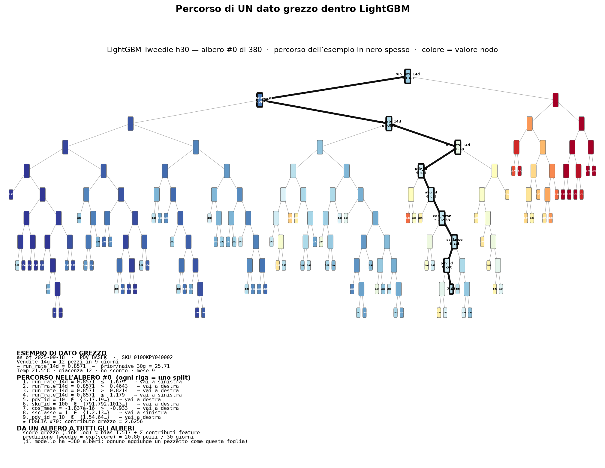
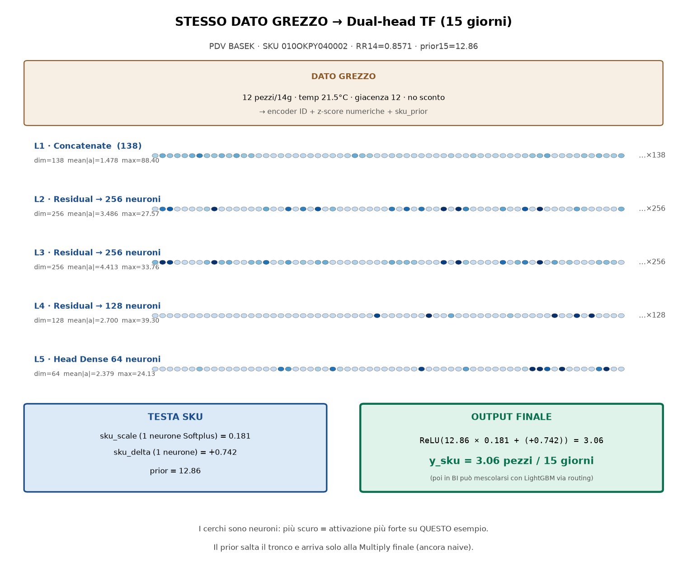

Esempio PDV BASEK · SKU 010OKPY040002 · as_of 2025-09-18
Il percorso dell’esempio è disegnato in nero spesso. Gli altri nodi restano sullo sfondo.

run_rate_14d = 0.8571 ≤ 1.679 → sinistrarun_rate_14d = 0.8571 > 0.4643 → destrarun_rate_14d = 0.8571 > 0.8214 → destrarun_rate_14d = 0.8571 ≤ 1.179 → sinistrapdv_id = 10 ∉ {3,17,19…} → destrasku_id = 100 ∉ {791,792,1013…} → destracos_mese = -1.837e-16 > -0.933 → destrassclasse = 1 ∈ {1,2,13…} → sinistrapdv_id = 10 ∉ {1,54,64…} → destra2.6256Output Tweedie h30 su questo esempio: 20.80 pezzi / 30 giorni
(somma di ~380 alberi sul link log, poi exp)

Output Dual-head: 3.06 pezzi / 15 giorni · ReLU(12.86 × 0.181 + (+0.742)) = 3.06